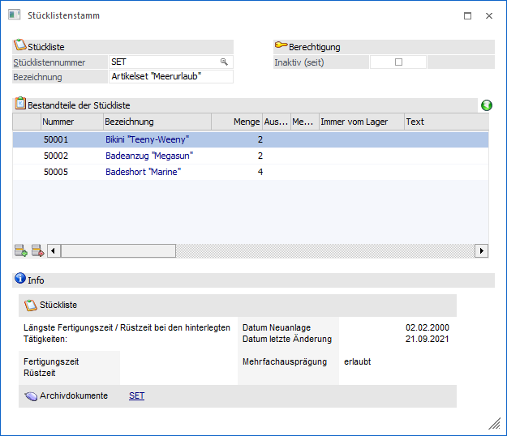
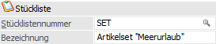
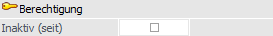
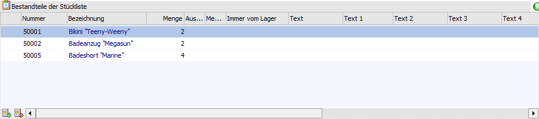
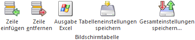
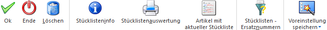

Der Stücklistenstamm einer Handelsstückliste wird aus dem Artikelstamm der WinLine FAKT (Register "Lager", Unterregister "Einstellungen", Button neben dem Feld "Stückliste") aufgerufen.
Die Handelsstückliste dient der Zusammenfassung von Artikeln zu einem neuen Handels- oder Fertigungsartikel.
Hinweis
Weitere Informationen zu den Themenbereichen "Stückliste", "Handelsstückliste", "Fertigungsstückliste" und "Produktionsstückliste" können sie dem Kapitel Exkurs - Stückliste entnehmen.

Folgende Felder stehen hier zur Verfügung:
Stückliste

Ø Stücklistennummer
Eingabe der Nummer der Stückliste. Soll dem Artikel eine bereits bestehende Liste zugewiesen werden, so kann der Matchcode (F9) verwendet werden.
Hinweis
Die Nummer der Stückliste und die Artikelnummer des HSL- bzw. FSL-Artikels müssen nicht übereinstimmen, sollte aber aus Gründen der Übersichtlichkeit so gewählt werden.
Ø Bezeichnung
Eingabe einer Bezeichnung für die Stückliste. Auch die Bezeichnung kann von der Bezeichnung des Artikels abweichen.
Hinweis
Durch Drücken der Taste F9 kann während einer Neuanlage der Stücklistenaufbau einer bereits bestehenden Stückliste übernommen werden.
Berechtigung

Ø Inaktiv (seit)
Wird eine Stückliste als "inaktiv" gekennzeichnet, so wird diese beim Erfassen eines Beleges nicht mehr berücksichtigt. D.h. die einzelnen Komponenten werden nicht mehr abgebucht und als Stücklistenartikel zugebucht.
Tabelle "Bestandteile der Stückliste"

In der Tabelle werden die Bestandteile der Stückliste, auch "Komponenten" genannt, hinterlegt. D.h. was wird benötigt, um 1x die Handels- bzw. die Fertigungsstückliste herzustellen.
Ø Typ
Hier wird der Typ der Eingabe angezeigt. Bei Handels- und Fertigungsstücklisten kann nur der Typ "0 - Artikel" verwendet werden.
Ø Artikelnummer
Eingabe der Artikelnummern, aus denen sich das fertige Handelsprodukt zusammensetzt. Es können auch Artikel verwendet werden, für die Chargen oder Seriennummern definiert wurden oder auch Artikel die in 2 Mengeneinheiten geführt werden.
Ø Bezeichnung
Anzeige der Bezeichnung der Artikel. Das Feld ist ein Informationsfeld und kann nicht bearbeitet werden.
Ø Menge
Eingabe der Menge der Komponente, die notwendig ist, um die Handelsstückliste 1x zusammenzustellen.
Ø Auswahl Mengeneinheit
An dieser Stelle kann die Mengeneinheit des Artikels definiert werden, wenn es sich um einen Artikel handelt, welcher in 2 Mengen geführt wird.
Ø Mengeneinheit
Hier wird die Mengeneinheit (VK-Colli) des Artikels angezeigt.
Hinweis
Bei Artikeln, welche in 2 Mengen geführt werden, wird an dieser Stelle die ausgewählte Mengeneinheit (siehe Feld "Auswahl Mengeneinheit") angezeigt.
Ø Immer vom Lager
Durch Aktivierung dieser Checkbox kann entschieden werden, dass dieser Artikel nicht zusammengestellt bzw. produziert, sondern vom Lager genommen werden soll.
Achtung
Die Möglichkeit diese Checkbox zu aktivieren steht nur bei Artikeln mit Stückliste (Handels- oder Fertigungsstückliste oder Produktionsartikel) zur Verfügung.
Ø Text / Text 1- Text 10
Eingabe eines freien Informationstextes. Hierfür stehen 11 Felder zu Verfügung.
Ø Varianten
Dieses Feld wird bei Handels- und Fertigungsstücklisten nicht unterstützt (nur für Produktionslisten in der WinLine PPS).
Ø Komponenteninfo ein- bzw. ausblenden
Durch Anwählen dieser Buttons kann ein zusätzlicher Informationsbereich ein- bzw. ausgeblendet werden, welcher Detailinformationen über die Komponente (den Artikel) der aktiven Zeile enthält.
Tabellenbuttons

Ø Zeile einfügen
An Stelle der aktiven Zeile wird eine Leerzeile eingefügt um einen neuen Artikel zu erfassen.
Ø Zeile entfernen
Die aktive Zeile wird aus der Tabelle entfernt.
Ø Ausgabe Excel
Durch Anwahl des Buttons "Ausgabe Excel" wird der Inhalt der Tabelle an Microsoft Excel übergeben.
Ø Tabelleneinstellungen speichern
Die Spalten einer Tabelle können grundsätzlich an beliebige Positionen verschoben, bzw. in der Breite entsprechend angepasst werden. Durch Anwahl des Buttons "Tabelleneinstellungen speichern" werden die Einstellungen benutzerspezifisch gespeichert und bei dem nächsten Aufruf des Programmpunktes wieder vorgeschlagen.
Ø Gesamteinstellungen speichern
Im Gegensatz zu "Tabelleneinstellungen speichern" können mit "Gesamteinstellungen speichern" mehrere Tabellenaufbauten gespeichert und nach Wunsch geladen werden. Zusätzlich werden Sonderfunktionen der Tabelle (z.B. "Spalte gruppieren") ebenfalls bei der Speicherung bedacht.
Buttons

Ø Ok
Durch die Anwahl des Buttons "Ok" bzw. der Taste F5 wird die Handelsstückliste gespeichert.
Ø Ende
Bei der Anwahl des Buttons "Ende" bzw. der Taste ESC wird das Stücklistenfenster geschlossen und alle nicht gespeicherten Eingaben werden verworfen.
Ø Löschen
Durch das Drücken des Löschen-Buttons wird die aktuell geladene Stückliste gelöscht. Dabei erfolgt zusätzlich die Abfrage, ob der Eintrag bei den Artikeln, in denen diese Stückliste hinterlegt ist, ebenfalls gelöscht werden sollen.
Ø Stücklisteninfo
Durch die Anwahl des Buttons "Stücklisteninfo" wird eine Stücklistenauswertung generiert, aus der die Zusammensetzung der Stückliste ersichtlich wird.
Ø Stücklistenauswertung
Durch das Anklicken des Buttons "Stücklistenauswertung" wird das Fenster "Stücklisten" geöffnet. An dieser Stelle können alle bereits angelegt Stücklistendefinitionen ausgedruckt werden.
Ø Artikel mit aktueller Stückliste
Über diesen Button kann ein neues Fenster geöffnet werden, in dem alle Artikel mit der aktuellen Stückliste aufgelistet werden. Nähere Informationen hierzu sind dem Kapitel Makro-Info / Stücklisten-Info zu entnehmen.
Ø Stücklisten-Ersatznummern
Durch Anwahl dieses Buttons wird das Fenster "Stücklisten - Ersatznummern" geöffnet. In diesem können u.a. Stücklistenkomponenten angegeben werden, welche bei der Auftragsanlage (z.B. über die Produktionsvorbereitung bzw. während der Auftragserfassung) automatisch ersetzt werden sollen.
Ø Voreinstellung speichern
Durch Anwahl dieses Buttons erfolgt eine benutzerspezifische Speicherung aller im Fenster getätigten Einstellungen. Diese sogenannten "Voreinstellungen" können jederzeit wieder abgerufen werden und ermöglichen dadurch ein schnelleres und zielorientierteres Arbeiten (nähere Informationen entnehmen Sie bitte dem Kapitel "Die Voreinstellungen").